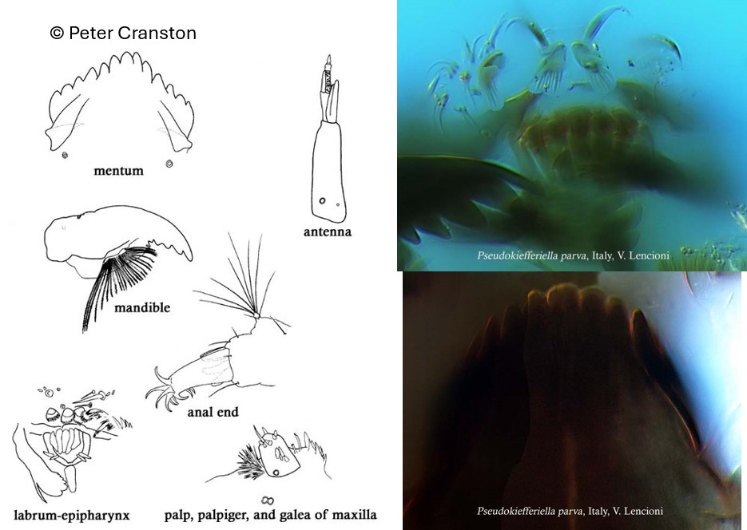

Pseudokiefferiella (parva?) (Edwards, 1932)

Mentum
Dent médiane légèrement plus grande que la 1ère dent latérale. 7-8 paires de dents latérales. Plaques ventromentales petites.
Mandibules
Dent apicale légèrement plus grande que la première dent interne.
Labre
SSI en forme de « peigne ». Peigne de l’épipharynx composé de 5 écailles allongées en forme de « casque ». Prémandibules larges avec 5-6 dents.
Ecologie
Les larves sont rencontrées dans les petits ruisseaux. Il y a une espèce d'Europe occidentale (P. parva) ainsi que plusieurs espèces dont la larve et l'adulte ne sont pas décrites.